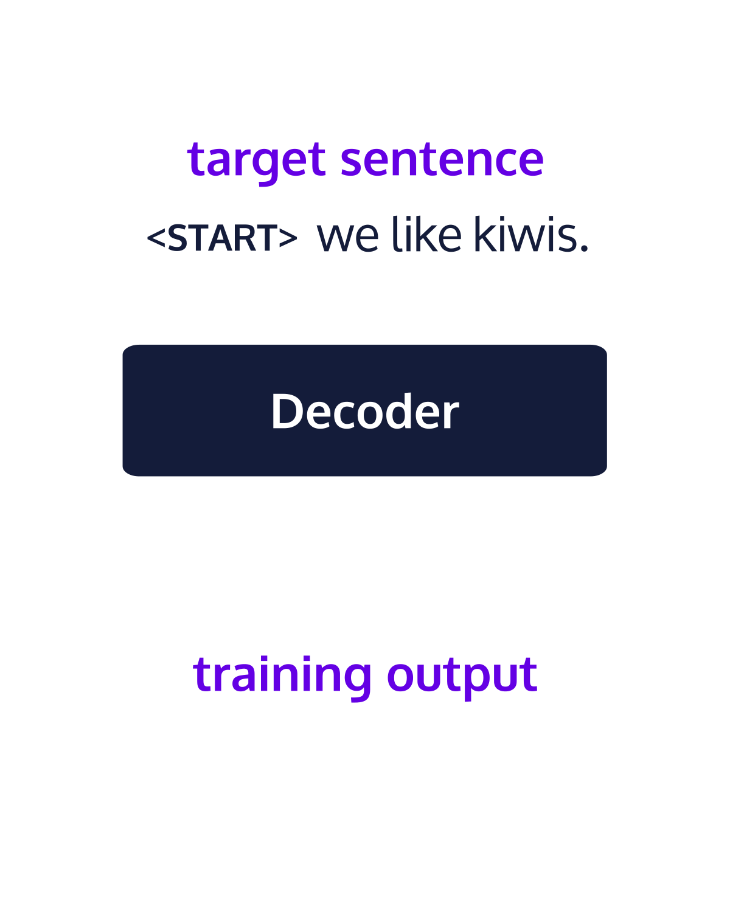

Open source · 2024
GPTs From Scratch
An open source, PyTorch-based implementation inspired by GPT models such as Llama and Mistral. Built to explore how these models work and the practical steps involved in training and deployment.
AI/ML systems architect · Pune, India
I work across the lifecycle of modern AI—from model training and fine-tuning to reliable, low-latency production systems.
Building, learning, and sharing along the way.
A little about me
I’m a Lead AI/ML System Architect at A10 Networks, working across the AI lifecycle—from model post-training and fine-tuning to the systems that deploy and protect AI applications. I’ve contributed to building AI Firewall and AI Gateway capabilities, connecting model expertise with reliable production infrastructure.
I also build open source projects and write about the systems and techniques I’m learning. I’m curious about how thoughtful engineering can turn ambitious ideas into products people rely on.
Things I’ve built

Open source · 2024
An open source, PyTorch-based implementation inspired by GPT models such as Llama and Mistral. Built to explore how these models work and the practical steps involved in training and deployment.
Notes from the field
Have something in mind?
Based in Pune, India